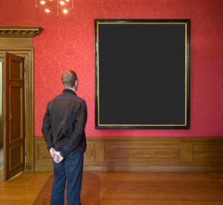

～ないでください
| Polite | ～ないでください |
|---|---|
| Casual | ～ないで |
Same meaning: "please don't". Only the politeness changes.

Shirokuma Cafe · Episode 4
ドライブスルーで遊ばないでください。
"Please don't mess around in the drive-thru." [staff talking to customers]
ないでください after a verb means please don't: you ask someone not to do something.
It goes on the ない-form: 遊ぶ → 遊ばない → 遊ばないでください. If you can say "not", just add でください.
ください makes it polite: for strangers, customers, teachers. With friends you drop it and just say ないで.

YouTube · video
無理しないでね。
"Don't push yourself too hard."
Same request without ください. する → しない → しないで. The ね makes it warm.
Examples
In a museum, a kid reaches for a statue.
触らないでください。
"Please don't touch."
触る → 触らない.
PoliteYour friend is about to tell everyone your secret.
言わないで！
"Don't tell!"
言う → 言わない.
CasualA sign at the pool.
ここで走らないでください。
"Please don't run here."
走る → 走らない.
PoliteYour friend says they'll leave you behind.
置いていかないでよ。
"Don't leave me behind!"
行く → 行かない.
CasualWith and without
写真を撮ってください。
"Please take a photo." Asking someone to do it.
写真を撮らないでください。
"Please don't take photos." Asking someone not to.
Sentence mining

Source unknown No source
もう二度と、うちのクマに関わらないでください。
"Please never go near my bear again."
関わる (to get involved with) → 関わらない.

Source unknown No source
自分のことを過小評価しないでください。
"Please don't sell yourself short."
過小評価する (to underrate) → しない.
Source unknown No source
私が集めているＣＤのジャケットを、勝手に触らないでください。
"Please don't touch the CD covers I collect without asking."
触る → 触らない.

Core deck Core
絵に触らないでください。
"Please don't touch the painting."
触る → 触らない.
Core deck Core
約束を忘れないでください。
"Please don't forget your promise."
忘れる → 忘れない.
Core deck Core
動かないで。
"Don't move."
動く → 動かない.
Core deck Core
今ごろそんなこと言わないで。
"Don't say that now."
言う → 言わない.
Core deck Core
彼に近寄らないで。
"Stay away from him."
近寄る (to go near) → 近寄らない.